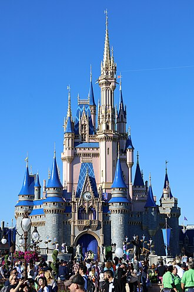
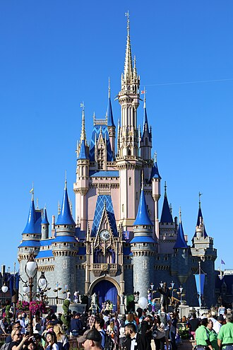

(1).jpg) 

City Overview
Orlando is one of the most-visited cities in the world primarily due to tourism, major events, theme parks, and convention traffic. It is the fourth-most visited city in the U.S. after New York City, Miami, and Los Angeles, with over 3.5 million visitors as of 2023
Theatre
In the mid-to-late 1990s, Orlando was known as "Hollywood East" because of numerous film production studios in the area, although such activity has slowed down considerably into the 2000s. Perhaps the most famous film-making moment in the city's history occurred with the implosion of Orlando's previous City Hall for the movie Lethal Weapon 3. The same year, Orlando native Wesley Snipes starred in the film Passenger 57, which was shot predominantly in his hometown. For the next decade, Orlando was production center for television shows, direct-to-video productions, and commercial production.[91] In 1997, Walt Disney Feature Animation operated a studio in Disney's Hollywood Studios in Walt Disney World. The feature animation studio produced the films Mulan, Lilo & Stitch, and the early stages of Brother Bear, but shutdown in 2004 due to the company's newfound focus on computer animation.[92] Universal Studios Florida's Soundstage 21 is home to TNA Wrestling's flagship show TNA Impact!. Nickelodeon Studios, which through the 1990s produced hundreds of hours of GAK-filled game shows targeted at children,[citation needed] no longer operates out of Universal Studios Florida. In the 2000s–2020s, entertainment related operations have predominantly consolidated the city's tourism-related businesses — namely events, concerts, hotels, and trade shows.[93]
Economy
Lockheed Martin has a large manufacturing facility for missile systems, aeronautical craft and related high-tech research. Other notable engineering firms have offices or labs in Metro Orlando: KDF, General Dynamics, Harris, Mitsubishi Power Systems, Siemens, Veritas/Symantec, multiple United States Air Force facilities, Naval Air Warfare Center Training Systems Division, Delta Connection Academy, Embry–Riddle Aeronautical University, General Electric, Air Force Agency for Modeling and Simulation, U.S. Army Program Executive Office for Simulation, Training, and Instrumentation (PEO STRI), United States Army Research, Development and Engineering Command, United States Army Simulation and Training Technology Center, AT&T, Boeing, CAE Systems Flight and Simulation Training, Hewlett-Packard, Institute for Simulation and Training, National Center for Simulation, Northrop Grumman and Raytheon. The Naval Training Center until a few years ago was one of the two places where nuclear engineers were trained for the United States Navy. Now the land has been converted into the Baldwin Park development. Numerous office complexes for large corporations have popped up along the Interstate 4 corridor north of Orlando, especially in Maitland, Lake Mary and Heathrow
Transportation
- I-4 is Orlando's primary interstate highway. Orlando is the second-largest city served by only one interstate, surpassed only by Austin, Texas, and is the largest metropolitan area in the US serviced by a single interstate. The interstate begins in Tampa, Florida, and travels northeast across the midsection of the state directly through Orlando, ending in Daytona Beach. As a key connector to Orlando's suburbs, downtown, area attractions, and both coasts, I-4 commonly experiences heavy traffic and congestion. I-4 is also known as State Road 400.
- East-West Expressway (Toll 408) is a major east–west highway managed by the Central Florida Expressway Authority. The highway interchanges with I-4 in Downtown Orlando, providing a key artery for residents commuting from eastern and western suburbs including the University of Central Florida and Waterford Lakes area. The highway also intersects with the Central Florida Greeneway (Toll 417) and Florida's Turnpike. By late 2006, the I-4/408 interchange had almost completed undergoing a major overhaul that creates multiple fly-over bridges and connectors to ease heavy traffic. The agency recently[when?] finished construction of lane expansions, new toll plazas, and sound barriers along the roadway, though much work remains to be done.
- Beachline Expressway (Toll 528) provides key access to the Orlando International Airport and serves as a gateway to the Atlantic coast, specifically Cocoa Beach and Cape Canaveral.
- Central Florida Greeneway (Toll 417) is a key highway for East Orlando, the highway is also managed by the Central Florida Expressway Authority and serves as Orlando's eastern beltway. The highway intersects with the East-West Expressway (Toll 408), the Beachline Expressway (Toll 528), and begins and ends on Interstate 4.
- Daniel Webster Western Beltway (Toll 429) serves as Orlando's western beltway. It is managed jointly by the Florida Turnpike and the Central Florida Expressway Authority. The highway serves as a "back entrance" to Walt Disney World from Orlando's northwestern suburbs including Apopka via Florida's Turnpike.
- John Land Apopka Expressway (Toll 414) A new east to west tollway serving northern Orlando. Phase I opened on February 14, 2009, and extends from US 441 to SR 429. Phase II opened on January 19, 2013, and links SR 429 to US 441 several miles west of the former SR 429 (now renamed State Road 451) intersection.
- Florida's Turnpike is a major highway that connects northern Florida with Orlando and terminates in Miami.
Education
Public primary and secondary education is handled by Orange County Public Schools. Some of the private schools include St. James Cathedral School (founded 1928), Orlando Lutheran Academy, Forest Lake Academy, The First Academy, Ibn Seena Academy, Trinity Preparatory School, Lake Highland Preparatory School, Bishop Moore High School and Orlando Christian Prep.